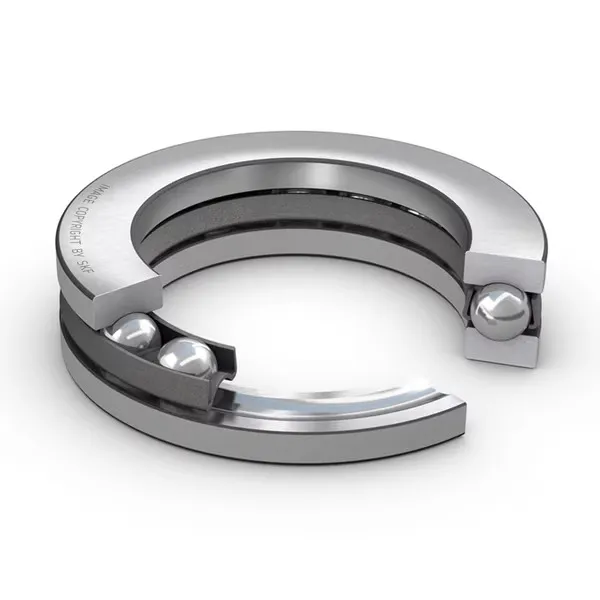

High-Precision Axial Handling Solutions Engineered for Single and Double Direction Load Isolation.
As an established industrial distribution specialist, Swaraj Bearing Company is your trusted 51000 and 52000 Thrust Supplier in India. Moving heavy machinery safely requires robust management of pure axial forces. Our premium inventory of the standard 51000 Series Thrust Ball Bearings and 52000 Series Thrust Ball Bearings delivers absolute rotational stability across critical manufacturing infrastructure, from the industrial zones of Maharashtra and Tamil Nadu to heavy engineering setups across India.
A high-performance thrust ball bearing is specifically manufactured to handle pure axial tracking forces without taking on radial stress. While the light-to-medium 51000 Thrust Ball Bearings focus exclusively on containing axial thrust moving from one direction, the wide-body 52000 Thrust Ball Bearings feature structural enhancements to capture alternating, reversible axial forces. Selecting the correct configuration ensures exact spatial alignment and extends overall component longevity across challenging production networks.

To make sourcing easy for maintenance supervisors and engineering teams, checking a standardized thrust ball bearing size chart is critical for proper component alignment. Exact management of thrust ball bearing dimensions stops early misalignment wear and guarantees long-term operational success.
| Parameter | Specification |
|---|---|
| Bearing Configurations | Single Direction (51000 Series) / Double Direction (52000 Series) |
| Primary Load Rating | Pure Axial Loads Only (Zero Radial Capacity Allowed) |
| Washer Layout Varieties | Flat Seat Design / Spherical Aligning Seat Formats |
| Standard Cage Metallurgy | Pressed Sheet Steel / Solid Machined Brass Cages |
| Core Material Composition | High-Grade Chromium Bearing Steel (SAE 52100) |
| Operational Temperature Bounds | -20°C up to +120°C Standard Limit Conditions |
| Precision Tolerances Available | ISO P0 Standard / High-Precision P6 & P5 Classes |
To protect your production facility from costly unplanned downtime, we distribute only 100% genuine, factory-certified brands manufactured to international precision metrics. Our massive domestic inventory holds ready-to-ship allocations from global brands like ZVL Slovakia, SKF, FAG, NTN, NSK, TIMKEN, ZKL, URB, and NACHI. As a premier 51000 Thrust Supplier in India and authorized channel associate, every order arrives with certified documentation, batch tracing data, and complete manufacturer backings.
We stock an extensive range of sizes to ensure rapid component deployment across India. The table below lists the available configurations across light, medium, and heavy-duty series:
The 51000 Series Thrust Ball Bearings are engineered precisely to accommodate deep axial tracking loads applied from a single direction. Structurally, a single direction thrust ball bearing contains one precision shaft washer, one housing washer, and a single high-accuracy ball and cage assembly. It cannot handle any radial forces. Commonly referred to as a single thrust ball bearing or single row thrust ball bearing, this configuration acts as a reliable stabilizing component on vertical axes. It prevents mechanical drift under static or dynamic downwards force. By acting as a robust axial ball thrust bearing, these units ensure reliable structural support in vertical turbine setups, high-velocity fluid pump drives, and main machine tool spindle configurations.
When machinery assemblies deal with reversing workloads, standard single-direction designs are insufficient. The 52000 Series Thrust Ball Bearings are highly engineered to support heavy axial loads acting in both directions. This specialized double direction thrust ball bearing architecture features two independent housing washers, a single central shaft washer, and two separate ball and cage rolling systems. This double row thrust ball bearing layout provides a rugged mechanical solution for setups where thrust vectors change rapidly during operational sequences. It keeps the moving shaft securely retained between both thrust limits. These heavy-duty bearings are heavily deployed in industrial processing presses, dual-clutch transmission housings, and complex multi-axis milling machines where bidirectional stability is essential.
| Series Variant | Type Designation | Available Model Reference Ranges (In Stock) |
|---|---|---|
| 51100 Series | Single Direction (Ultra-Light) | 51100, 51101, 51102, 51103, 51104, 51105, 51106, 51107, 51108, 51109, 51110, 51111, 51112, 51113, 51114, 51115, 51116, 51117, 51118, 51120, 51122, 51124, 51126, 51128, 51130, 51132, 51134, 51136, 51138, 51140, 51144, 51148, 51152 |
| 51200 Series | Single Direction (Light) | 51200, 51201, 51202, 51203, 51204, 51205, 51206, 51207, 51208, 51209, 51210, 51211, 51212, 51213, 51214, 51215, 51216, 51217, 51218, 51220, 51222, 51224, 51226, 51228, 51230, 51232, 51234, 51236, 51238, 51240, 51244, 51248, 51252 |
| 51300 Series | Single Direction (Medium) | 51305, 51306, 51307, 51308, 51309, 51310, 51311, 51312, 51313, 51314, 51315, 51316, 51317, 51318, 51320, 51322, 51324, 51326, 51328, 51330 |
| 51400 Series | Single Direction (Heavy) | 51405, 51406, 51407, 51408, 51409, 51410, 51411, 51412, 51413, 51414, 51415, 51416, 51417, 51418, 51420, 51422, 51424, 51426, 51428, 51430 |
| 52200 Series | Double Direction (Standard) | 52202, 52204, 52205, 52206, 52207, 52208, 52209, 52210 |
Installed inside vertical deep-well pumps and submersed drainage units to hold the heavy downward hydraulic head pressure generated by spinning impellers.
Used within the main positioning drives of machine tool spindles to eliminate lateral play and ensure precise metal cutting.
Integrated into high-pressure bidirectional industrial formatting presses to stabilize internal mechanisms against shifting load cycles.
Fitted within complex helical and worm gear boxes to keep central transmission shafts from creeping forward under load.
Applied beneath heavy machinery rotary turn-tables to carry immense weight smoothly while keeping rotation centered.
At Swaraj Bearing Company, quality is the foundation of our supply philosophy. Every 51000 & 52000 Series Thrust Ball Bearings unit undergoes strict verification for authenticity and dimensional accuracy. As an authorized distributor of ZVL Slovakia and a trusted supply partner for leading global brands, we provide products backed by proper documentation and international quality compliance.
We adhere to recognized standards that reflect our commitment to quality and reliability:
These quality measures ensure dependable performance and long operational life in demanding industrial environments.
As an authorized distributor of ZVL Slovakia and a trusted supply channel for leading global brands, we provide products backed by proper documentation and compliance with international quality standards.
Swaraj Bearing Company supplies genuine 51000 & 52000 Series Thrust Ball Bearings through authorized sourcing channels. As an authorized distributor of ZVL Slovakia and a trusted partner for leading global brands, we ensure ready stock availability, proper documentation, and timely pan‑India dispatch for heavy-duty industrial applications.
Every component sourced directly from authorized manufacturers with full batch traceability.
Ready stock and timely dispatch across India for urgent and bulk requirements.
Flexible supply models tailored for OEMs, industrial clients, and bulk distributors across India.
Decades of expertise in bearing procurement, supplier evaluation, and technical product analysis.
Our team is always available for part identification, sizing, and procurement guidance.
Official authorization from ZVL Slovakia with full OEM documentation and batch certification.
Swaraj Bearing Company provides real-time stock availability, competitive volume pricing, and dedicated logistics support across all major industrial hubs to minimize your facility's downtime. Our engineering team stands ready to assist your procurement departments with technical cross-referencing, bulk scheduling, and customized clearance specifications. Contact our sales desk today to request an instant quote and secure genuine, high-performance components for your machinery.